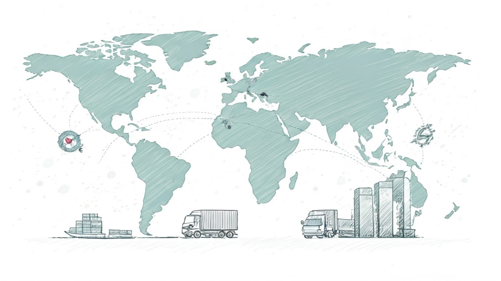

Tedarik Zinciri
22 Mayıs 2025
📌 Eğitim Duyurusu | Tedarik Zincirinde Risk Yönetimi ve Kriz Senaryoları
Tedarik zincirleri, her geçen gün artan belirsizliklerle karşı karşıya. Bu noktada, doğru risk yönetimi ve olası kriz senaryolarına hazırlıklı olmak, işletmelerin sürdürülebilirliği için kritik öneme sahip.
🎯
22 Mayıs 2025 Masterclass platformu üzerinden gerçekleştireceğim eğitimde;
- Tedarik zincirinde risk türlerini,
- Kriz senaryoları oluşturma yöntemlerini,
- Pratik vaka analizleriyle çözüm yollarını paylaşacağım.
📆
Detaylar ve kayıt için: https://www.masterclass.com.tr/event-details/tedarik-zincirinde-risk-yonetimi-ve-kriz-senaryolari
👉 Krizlere karşı hazırlıklı olmak isteyen tüm tedarik zinciri profesyonelleri bekliyorum.
#tedarikzinciri
#riskmanagement
#krizyonetimi
#eğitim
#supplychain
#masterclass
← Tüm Bloglara Dön